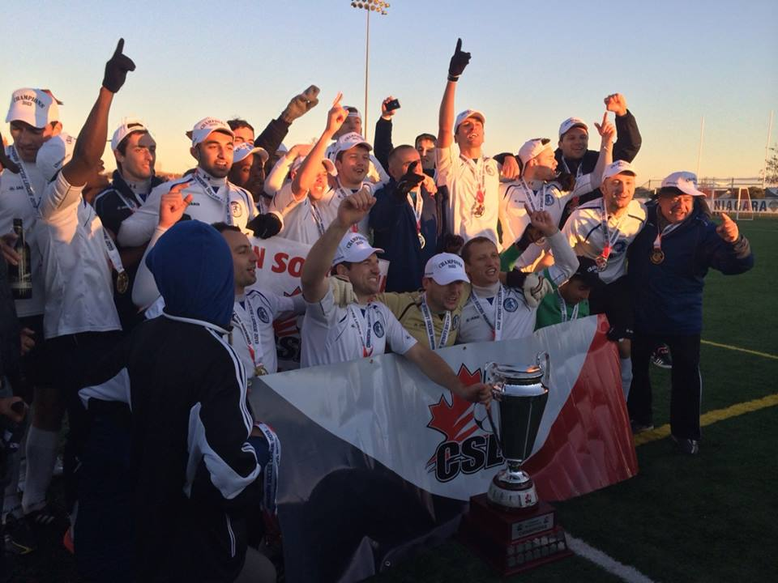

| NEWS |
|---|
2015 Open TryoutsSaturday - March 7th, 2015 at 14:00 PM by SC WaterlooAll players aged 16 and above who are committed to a training regimen in a professional environment and would like the opportunity to tryout for the 2015 season should register ASAP. We cannot take any more international players at this time, so we are restricting tryouts to Canadian citizens and permanent residents at this time (apologies to those who have been inquiring from overseas). The cost for NEW players is $50 (CASH ONLY). RETURNING players should still register and attend tryouts to receive invitations to preseason training camp. |
2014 ReviewSaturday - March 7th, 2015 at 13:00 PM by Thomas Ang
We entered the 2014 season full of optimism, as both our Pro and 2nd Division teams were defending champions. However, injuries quickly made it obvious how difficult it would be to defend our titles. The Pro team had a difficult start to the campaign and was forced to play many players out of position, which made it difficult to remain stable at the back. Furthermore, opposition teams were more aware of our powerful counter attack and it was much more difficult to score goals than in the previous season. A late push saw us make the playoffs and salvage the season, but it was still disappointing to miss out on our title defence. Now, the 2015 season is in sight and there are new reasons for optimism. There will be new blood in the club and the league, and new reasons to hope. Keep calm, and keep your eyes on us! |
SC Waterloo Region 2014 Open TryoutsSaturday - March 8th, 2014 at 11:00 AM by SC Waterloo
UPDATE: April 5th and 6th - CANCELLED due to bad field conditions. All players should come April 12th and 13th instead. All players aged 16 and above who are committed to a training regimen in a professional environment and would like the opportunity to tryout for the 2014 season should register ASAP for 2 of 4 tryout dates in early April. April 12th - 12 PM - 1:30 PM April 13th - 12 PM - 1:30 PM Players are required to show up 30 minutes prior to start of practice. If you are late you will not be included in that session. We look forward to seeing you all and our defence of the CSL double championship begins NOW! |
We Are The Champions!Monday - November 4th, 2013 at 12:00 PM by Thomas Ang On November 3rd of 2013, at Kalar Park in Niagara Falls, the Pro and U23 teams defeated the first place regular season teams of the 1st and 2nd divisions, respectively, to make SC Waterloo the first club to take home the double in CSL history! The U23 team defeated the Toronto Croatia reserve team 2-0 before the Pro team defeated Kingston FC 3-1. SC Waterloo also took home The Fair Play and Respect Award at the CSL Awards Ceremony the night before. Both teams finished mid-table in the regular season but went into the playoffs in flying form. The players will celebrate and rest a little before getting down to work in offseason training so they can come back in the spring ready to defend the 1st and 2nd division titles. To stay up-to-date with the club's offseason activities, please stay in touch on Facebook and Twitter. Have a great winter and see you in the spring! |